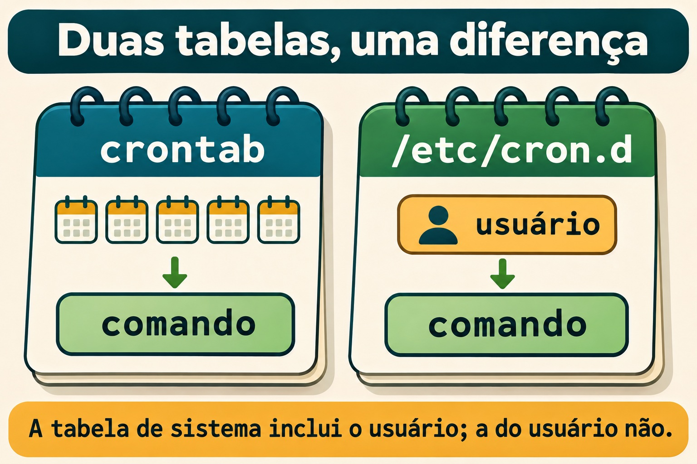
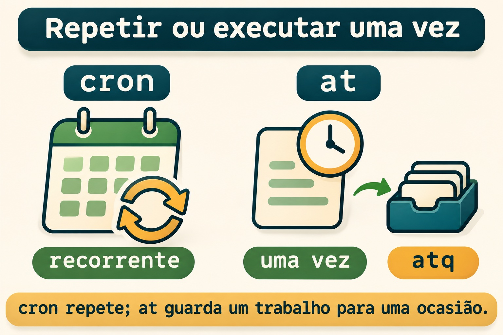

Aula 14.1 · cron e at
No Agendador de Tarefas do Windows, você confere conta, ação e resultado. No Linux, a mesma disciplina evita trabalhos que funcionam no terminal e falham sozinhos. Você vai criar agendas próprias, preservar as existentes e distinguir repetição de execução única.
Núcleo desta aula: uma agenda precisa de usuário, ambiente, comando e evidência de execução. cron repete; at executa uma vez. O resto é aprofundamento.
| Ficha | |
|---|---|
| Módulo | M14 · Agendamento, logs e hora, aula 1 de 5 |
| Quando | Semana 19 |
| Ao final | Você instala agendas sem apagar trabalhos alheios e verifica a execução pelo resultado |
| Pré-requisitos | M13 concluído; student, sudo, noVNC e SSH nas VMs 201 e 202 |
| Tempo | Cerca de 90 minutos |
| Snapshots | m14a1-inicio e m14a1-fim nas duas VMs |
1 · Aquecimento
Responda antes de consultar os comandos.
- Por que uma permissão DAC correta não garante qualquer operação de um processo confinado?
- Qual diferença existe entre habilitar e iniciar um serviço?
- Como você distingue uma configuração salva de uma execução realmente ocorrida?
2 · Por que importa
O relatório diário não apareceu. O comando funciona quando você entra pelo SSH, mas depende de um diretório atual e de uma variável da sua sessão. O agendador não abriu seu terminal interativo. Seu diagnóstico começa pelo ambiente e pelo usuário, não por reiniciar a máquina.
Uma agenda também pode estar correta com o serviço parado. Registre três evidências: entrada instalada, agendador ativo e arquivo ou log produzido pelo trabalho.
3 · Modelo mental
Pense na portaria: a lista de horários manda chamar alguém, mas o crachá define quem executa. A ficha do trabalho precisa conter o caminho completo, sem depender do que estava aberto na mesa de outra pessoa.
agenda -> agendador ativo -> usuário -> comando -> evidência
cron: repetição at: uma ocasião
Ponte Windows
| Windows | Linux |
|---|---|
| Gatilho recorrente | cron |
| Executar uma vez | at |
| Conta da tarefa | Dono da crontab ou campo de usuário do sistema |
| Histórico e resultado | Saída capturada, journal e arquivo produzido |
4 · O essencial
Cinco campos de tempo
A ordem é minuto, hora, dia do mês, mês e dia da semana. Depois vem o comando. Use um script para lógica e formatação; uma linha de agenda longa é difícil de revisar.
* * * * * comandoO asterisco em todos os campos significa cada minuto. Dia do mês e dia da semana têm uma interação importante: quando ambos são restritos, o cron tradicional executa quando qualquer um dos dois corresponde.
Usuário versus sistema
crontab -e edita a tabela do próprio usuário. Arquivos em /etc/cron.d acrescentam um campo de usuário entre o calendário e o comando. Não coloque esse campo na tabela do usuário.


Ambiente e saída
Defina caminhos absolutos. Capture saída e erro. O caractere % tem tratamento especial em uma linha cron; deixe formatações de data dentro do script para evitar esse problema.
Execução única e acesso
at guarda um trabalho para um instante futuro. atq mostra a fila; atrm remove um identificador específico. Os arquivos cron.allow, cron.deny, at.allow e at.deny controlam quem pode usar essas ferramentas conforme a implementação.
Restringir a ferramenta não apaga automaticamente trabalhos já instalados. Nesta aula você observa os controles existentes; não modifica listas compartilhadas para plantar uma falha.


Rocky × Debian
| Item | Rocky 9 | Debian 13 |
|---|---|---|
| Pacote cron tradicional | cronie | cron |
| Unidade | crond.service | cron.service |
| Execução única | Pacote at, unidade atd.service | Pacote at, unidade atd.service |
| Alternativa instalada | Identifique o proprietário atual | Não substitua systemd-cron sem planejar |
5 · Lab guiado
Faça tudo nas duas VMs. Confirme que a home de student é /home/student, que o usuário pode usar crontab e at, e que não existe outra alteração simultânea nas agendas dele durante o exercício.
Passo 1 · Preparar a proteção
Palpite: instalar cron comprova que algum trabalho foi executado?
No host Proxmox:
qm snapshot 201 m14a1-inicio
qm snapshot 202 m14a1-inicioNa Rocky, use o primeiro bloco. Na Debian, confirme antes que o lab usa cron tradicional e use o segundo.
sudo dnf install -y cronie at
sudo systemctl enable --now crond atdsudo apt install -y cron at
sudo systemctl enable --now cron atdSaída esperada: serviços ativos. Os agendadores instalados ficam disponíveis como ferramentas do curso; a limpeza vai retirar somente os trabalhos de exercício.
Verifique: confira a unidade correta com systemctl is-active e a home com getent passwd student. Se houver outro proprietário das agendas, pare e ajuste o preparo.
Passo 2 · Testar o trabalho fora da agenda
Palpite: como provar que o trabalho executa como student?
Confirme ausência dos caminhos antes de criá-los.
test ! -e "$HOME/m14a1"
sudo test ! -e /usr/local/libexec/m14a1-tick
sudo test ! -e /etc/cron.d/m14a1
mkdir -m 700 "$HOME/m14a1"
sudo install -d /usr/local/libexec
sudo tee /usr/local/libexec/m14a1-tick > /dev/null <<'EOF'
#!/bin/sh
/usr/bin/date -Is
/usr/bin/id -un
EOF
sudo chmod 755 /usr/local/libexec/m14a1-tick
/usr/local/libexec/m14a1-tickSaída esperada: data real da VM e usuário student. Não há data inventada para copiar.
Verifique: execute o mesmo caminho absoluto que será usado pela agenda.
Passo 3 · Instalar uma entrada do usuário
Palpite: instalar uma tabela com uma única linha apaga as linhas anteriores?
Salve a tabela atual. Se não existir tabela, crontab -l informa isso e retorna falha; o arquivo de referência fica vazio. Uma negativa de permissão é outra situação e precisa ser resolvida antes.
crontab -l > "$HOME/m14a1/crontab.inicio"
cp "$HOME/m14a1/crontab.inicio" "$HOME/m14a1/crontab.candidate"
cat >> "$HOME/m14a1/crontab.candidate" <<'EOF'
# BEGIN m14a1
* * * * * /usr/local/libexec/m14a1-tick >> /home/student/m14a1/user.log 2>&1
# END m14a1
EOF
diff -u "$HOME/m14a1/crontab.inicio" "$HOME/m14a1/crontab.candidate"Confira que só o bloco de exercício foi acrescentado. Depois instale a candidata:
crontab "$HOME/m14a1/crontab.candidate"
crontab -lSaída esperada: tabela anterior preservada e bloco novo presente. Após uma virada de minuto com o serviço ativo, user.log recebe o resultado.
Verifique: leia tail "$HOME/m14a1/user.log"; a existência da entrada sozinha não comprova execução.
Decida 1
| Opção | Para acrescentar uma tarefa sem perder outras |
|---|---|
| A | Instalar uma tabela que contém só a tarefa nova |
| B | Revisar uma candidata com as entradas anteriores e o bloco novo |
| C | Apagar a tabela inteira primeiro |
Escolha B. A operação de instalação substitui a tabela; a candidata precisa conter o que você quer preservar.
Passo 4 · Criar a agenda de sistema própria
Palpite: onde aparece o usuário nesta variante?
sudo tee /etc/cron.d/m14a1 > /dev/null <<'EOF'
SHELL=/bin/sh
PATH=/usr/bin:/bin
* * * * * student /usr/local/libexec/m14a1-tick >> /home/student/m14a1/system.log 2>&1
EOF
sudo chmod 644 /etc/cron.d/m14a1
sudo chown root:root /etc/cron.d/m14a1Saída esperada: depois de uma virada de minuto, system.log mostra o resultado executado como student. Não é necessário reiniciar cron para cada arquivo correto acrescentado.
Verifique: compare os dois logs e identifique o campo adicional no arquivo de sistema.
Passo 5 · Executar uma vez com at
Palpite: fechar o terminal remove um trabalho já aceito pelo at?
printf '/usr/local/libexec/m14a1-tick >> /home/student/m14a1/once.log 2>&1\n' > "$HOME/m14a1/once.job"
LC_ALL=C at -f "$HOME/m14a1/once.job" now + 2 minutes 2> "$HOME/m14a1/at.receipt"
cat "$HOME/m14a1/at.receipt"
atqSaída esperada: recibo com o identificador real e trabalho na fila. Após o horário, ele sai da fila e produz once.log.
Verifique: compare recibo, fila e arquivo produzido. Aceitação na fila não é confirmação de sucesso do comando.
Decida 2
| Opção | O trabalho foi aceito, mas não há resultado |
|---|---|
| A | Trocar as permissões para todos poderem escrever |
| B | Reenviar várias cópias sem verificar |
| C | Conferir horário, fila, serviço e saída do trabalho |
Escolha C. A evidência de entrega ao agendador e a de execução são diferentes.
Passo 6 · Conferir acesso e persistência
Palpite: proibir o uso de uma ferramenta apaga seus trabalhos existentes?
Observe os controles que já existem, sem alterá-los. Um caminho ausente é uma informação sobre a configuração.
sudo ls -l /etc/cron.allow /etc/cron.deny /etc/at.allow /etc/at.deny
crontab -l
atq
sudo systemctl rebootSaída esperada: depois do reboot, cron ativo continua usando as entradas instaladas. O trabalho at já concluído não reaparece como recorrente.
Verifique: leia as datas novas nos dois logs. Não altere o relógio para acelerar o teste.
6 · Quebre e conserte
Quebra 1 · Trabalho sem execução permitida
Sintoma: o minuto passa, mas a tarefa registra um erro em vez da saída normal.
Investigação: retire execução somente do script próprio e tente manualmente o mesmo caminho.
sudo chmod 644 /usr/local/libexec/m14a1-tick
/usr/local/libexec/m14a1-tick
tail "$HOME/m14a1/user.log"Causa: a agenda chama um executável sem permissão de execução.
Conserto: restaure sudo chmod 755 /usr/local/libexec/m14a1-tick.
Verifique: execute manualmente e confira a próxima saída agendada.
Prevenção: teste como o mesmo usuário e pelo mesmo caminho da agenda.
Quebra 2 · Campo de usuário ausente
Sintoma: a tabela do usuário funciona, mas o arquivo de sistema deixa de gerar resultado novo.
Investigação: salve o arquivo próprio e remova apenas o campo obrigatório dele.
sudo cp -a /etc/cron.d/m14a1 "$HOME/m14a1/cron.d.good"
sudo sed -i 's/\* student /\* /' /etc/cron.d/m14a1
sudo cat /etc/cron.d/m14a1Causa: cron interpreta a posição do usuário segundo o formato de sistema, não o formato da crontab pessoal.
Conserto: restaure só o arquivo próprio com sudo cp -a "$HOME/m14a1/cron.d.good" /etc/cron.d/m14a1.
Verifique: depois da próxima virada de minuto, system.log volta a crescer.
Prevenção: confira o formato do destino antes de colar uma linha de agenda.
Quebra 3 · Trabalho cancelado antes do horário
Sintoma: um novo trabalho at não produz o resultado porque você o retirou da fila.
Investigação: envie outra vez once.job, anote o identificador do recibo novo e confira o conteúdo com at -c antes de remover. Não use um número de exemplo.
at -f "$HOME/m14a1/once.job" now + 5 minutes
atq
read -r -p 'Own job ID: ' ATJOB
at -c "$ATJOB"Confirme que é o trabalho de student criado agora e só então execute atrm "$ATJOB".
Causa: a ausência de resultado corresponde ao cancelamento, não a um defeito do serviço.
Conserto: se o trabalho ainda for necessário, envie uma única nova cópia.
Verifique: confira o novo identificador e o resultado após o horário.
Prevenção: registre identificador, horário e estado, sem apagar a fila inteira.
Limpeza
Remova somente o bloco marcado da tabela atual. Revise o diff antes de instalar a tabela limpa; outras entradas precisam permanecer.
crontab -l > "$HOME/m14a1/crontab.atual"
sed '/^# BEGIN m14a1$/,/^# END m14a1$/d' "$HOME/m14a1/crontab.atual" > "$HOME/m14a1/crontab.clean"
diff -u "$HOME/m14a1/crontab.atual" "$HOME/m14a1/crontab.clean"Após conferir a remoção exclusiva do bloco:
crontab "$HOME/m14a1/crontab.clean"
sudo rm -f /etc/cron.d/m14a1 /usr/local/libexec/m14a1-tick
atqCancele apenas trabalhos de exercício ainda pendentes, pelo identificador conferido. Guarde os registros; uma tabela vazia remanescente não executa trabalhos.
7 · Armadilhas
| Erro | Faça | Motivo |
|---|---|---|
| Depender da sessão interativa | Caminhos absolutos e ambiente explícito | cron não abriu seu terminal |
| Apagar tabela para acrescentar tarefa | Candidata revisada preservando entradas | Instalar substitui a tabela |
| Confundir os dois formatos | Campo de usuário só no formato de sistema | A interpretação muda |
| Aceitação significa sucesso | Conferir saída do trabalho | Fila e resultado são evidências distintas |
8 · Quiz
- Quais são os cinco campos de tempo?
- Onde entra o usuário em
/etc/cron.d? - Por que usar caminhos absolutos?
- O que
atqdemonstra? - Remover acesso à ferramenta apaga trabalhos existentes?
- O que deve ser preservado ao limpar uma agenda?
9 · Cola
| Tarefa | Comando |
|---|---|
| Listar tabela pessoal | crontab -l |
| Editar tabela pessoal | crontab -e |
| Listar fila única | atq |
| Inspecionar trabalho escolhido | at -c "$ATJOB" |
Flashcards: crie cinco cartões sobre formato, usuário, ambiente, fila e evidência. Revise em D+1, D+3, D+7 e D+21.
10 · Checklist e fechamento
- [ ] Executei o mesmo trabalho manualmente e agendado.
- [ ] Preservei outras entradas e identificadores da fila.
- [ ] Expliquei as três causas com evidências.
Último exercício: descreva um relatório que não depende de variável da sessão e mostre como você comprovaria que rodou.
Reboot de conferência: depois da limpeza, reinicie as duas VMs e confirme que os registros de exercício não recebem novas linhas e que as outras agendas continuam instaladas.
sudo systemctl rebootNo host Proxmox:
qm snapshot 201 m14a1-fim
qm snapshot 202 m14a1-fim11 · Na vida real
Em host autorizado, faça apenas inventário com crontab -l, atq e a leitura dos arquivos de agenda permitidos ao seu papel. Não edite, reenvie nem cancele trabalhos nessa missão. Identifique dono, comando, destino da saída e evidência da última execução.
12 · Aprofundar quando quiser
- crontab(5), Debian e crontab(5), cronie: formato e ambiente.
- crontab(1) e at(1): instalação e fila.
DeepTutor (http://10.1.0.149:3782, KB "Curso Linux Sysadmin"):
!explica Compare crontab de usuário, /etc/cron.d e at com foco em usuário e ambiente.!feynman Vou explicar por que um comando funciona no SSH e falha no cron. Critique minha explicação.!quiz Crie seis incidentes de agendamento sem propor apagar agendas existentes.
Gabarito comentado
Aquecimento
- DAC e a política MAC precisam permitir a operação.
- Habilitar participa do boot; iniciar muda o estado atual.
- Compare configuração, estado do serviço e resultado produzido.
Quiz
- Minuto, hora, dia do mês, mês e dia da semana.
- Depois dos cinco campos e antes do comando.
- O ambiente não é sua sessão interativa.
- Trabalhos ainda na fila, não o sucesso de trabalhos concluídos.
- Não; controle de uso da ferramenta e trabalhos instalados são coisas diferentes.
- Todas as entradas e trabalhos que não pertencem ao exercício.
← Aula 13.3 · autofs · Índice de aulas · Plano do curso: 14.2 em diante →